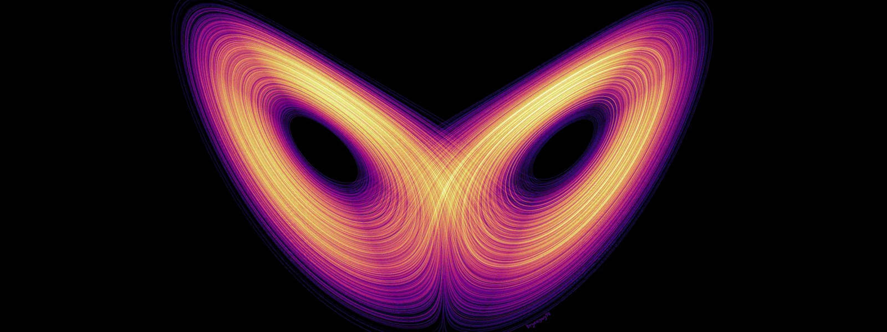

La creatività (divergente) è l'intelligenza che si diverte
Le coincidenze non esistono!
IF la NASA ha ragione (Land, 1992) nell'aver scoperto che il 98% degli adulti ha perso la creatività che aveva a 5 anni a causa dell'educazione scolastica e della pressione sociale, AND la regola relativa alle minoranze sistematicamente ininfluenti quando sono rappresentate da meno dello 3.5% della popolazione (*) è vera THEN statisticamente parlando il sistema/società è stupido in modo irreversibile e di conseguenza stocasticamente prevedibile. AMEN!Nota (*)
La regola del 3.5% è stata resa popolare da Erica Chenoweth e Maria Stephan nel loro libro "Why Civil Resistance Works: The Strategic Logic of Nonviolent Conflict" della Columbia Studies in Terrorism and Irregular Warfare, pubblicato a dicembre 2012.Gli USA e lo svantaggio cognitivo
Gli USA soffrono di uno svantaggio cognitivo e quindi bombardano l'Iran! Perchè l'intelligenza non è una qualità intensiva e quindi produce un vantaggio asimmetrico:Come finirà?
In estrema sintesi, gli USA dovranno spostare le loro riserve interne di greggio da collaterale al debito pubblico USA — che ormai ha raggiunto i $37 trilioni — ad attività operativa di estrazione per la produzione di energia.La creatività (divergente) è l'intelligenza che si diverte (cit.)LOL

Nota di colore
Si noti che il diagramma delle traiettorie prodotte dall'attrattore strano di Lorenz, così come presentato nell'immagine, assomiglia sia ad una farfalla (effetto, 1963) sia alla maschera di Zorro (1919). La quale, però, è nata ben prima del suo personaggio ed era prodotta in forme stilisticamente e artigianalmente ben più pregiate, come quelle ("domino" o "lupo") usate nel carnevale di Venezia (1094). Maschere così piacevoli alla vista che, infatti, divennero di moda nel XVIII secolo, sopratutto fra le cortigiane e le donne di ceto sociale elevato, diffondendosi prima presso la corte francese, anche nella versione "lorgnette masque" rette tramite un supporto a bastoncino, e poi in Europa.Share alike
© 2025, Roberto A. Foglietta <roberto.foglietta@gmail.com>, CC BY-NC-ND 4.0